We are no longer a platform where you can build AI agents. We are an AI agent. Like, technology should just work. You shouldn't have to build an agent to get stuff done. Using Lindy has changed my relationship with the computer, and I barely open Gmail anymore. It's kind of weird. I used to be glued to my inbox like a realtor founder. OpenClaw is not real to your weekend plan. Like, technology is supposed to be at your service now the other way around.
Interface & Outils : Présentation ou face-caméra explicatif du trader sans interface logicielle partagée.
Contenu textuel & Code : Explications orales des stratégies et mise en contexte méthodologique du marché.
Action / Démonstration : Explications face caméra et analyse conceptuelle des marchés.
I just sat down with the CEO of one of the biggest AI automation platforms to talk about OpenClaw, their new competing product that you can set up in under 60 seconds. and why how we think about AI automations and agents just changed forever. So grab a coffee and strap in because this is going to be a fun one. Flo, what is going on, man? I'm stoked to have you on the podcast.
Interface & Outils : Présentation ou face-caméra explicatif du trader sans interface logicielle partagée.
Contenu textuel & Code : Explications orales des stratégies et mise en contexte méthodologique du marché.
Action / Démonstration : Explications face caméra et analyse conceptuelle des marchés.
There's some pretty juicy things that we're probably going to talk about today. Anyways, I've used your guys' platform for years, probably three, four years now. I absolutely love it. And a lot of my audience loves it too. So I'm super stoked to have you on the podcast. It's a full circle moment and stoked to be talking to you today. Yeah, thanks for having me, Brock. And you have been with us from the very beginning, haven't you?
Interface & Outils : Présentation ou face-caméra explicatif du trader sans interface logicielle partagée.
Contenu textuel & Code : Explications orales des stratégies et mise en contexte méthodologique du marché.
Action / Démonstration : Explications face caméra et analyse conceptuelle des marchés.
I'm really appreciative. Yeah, no, you guys have a great product. And I think one thing, just diving into this, yeah, my audience is pretty non-technical and I've always loved how your platform is so easy to build out different automations, you know, like whether it's a meeting prep assistant or auto labeling emails, these are all things that I've used your product for, for years to like help me run my business. And I think you guys are making an interesting transition a product wise. And I'm super excited to talk about today. So yeah, give me kind of a break down like early stages, what it is that you guys were trying to build. And then we can maybe
Interface & Outils : Présentation ou face-caméra explicatif du trader sans interface logicielle partagée.
Contenu textuel & Code : Explications orales des stratégies et mise en contexte méthodologique du marché.
Action / Démonstration : Explications face caméra et analyse conceptuelle des marchés.
dive a bit more into like where you guys are evolving to in the next couple of months or coming years. Yeah, 100%. So the way we've explained who we are for the longest time has been we are the easiest way to build AI agents for non-technical people. And I think we had an epiphany of sorts sometime around last year where we realized that especially as the technology evolved and as the models get better, that the easiest way to build an AI agent becomes almost a contradiction in terms.
Interface & Outils : Présentation ou face-caméra explicatif du trader sans interface logicielle partagée.
Contenu textuel & Code : Explications orales des stratégies et mise en contexte méthodologique du marché.
Action / Démonstration : Explications face caméra et analyse conceptuelle des marchés.
You know, it's almost like I told you, like, hey, I'm the easiest way for you to make yourself a burger at home, a cheeseburger. And it's like, hey, like, if you really want the easiest way to make yourself a cheeseburger, you're not going to want to make yourself a cheeseburger. You're going to go to McDonald's. So that's kind of, there's a big, big, big mental shift we've made where we are going from no longer a platform where you can build AI agents. We are an AI agent.
Interface & Outils : Visioconférence (aucun outil de trading, terminal ou graphique affiché).
Contenu textuel & Code : Aucun contenu technique, code ou indicateur visible.
Action / Démonstration : Conversation en visioconférence entre le présentateur et un invité.
You don't have to build it, you can just use it. So what we just released last week is called Vindy Assistant. And the way I like to describe it is like, it's an AI work assistant that helps you get rid of the bullshit. Like your email, your calendar, your meeting scheduling, your email triaging, your email drafting. Like it saves you one to two hours a day from the, excuse my French, like the bullshit.
Interface & Outils : Interface utilisateur de messagerie / application Lindy Assistant
Contenu textuel & Code : E-mails de démonstration pour la planification de réunions et icônes d'applications professionnelles intégrées (Google Calendar, Gmail, Slack, Notion, Asana, Monday.com, Zoho).
Action / Démonstration : Démonstration visuelle de la connexion de Lindy Assistant aux outils de communication et de productivité.
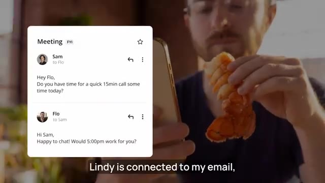
🔍 Agrandir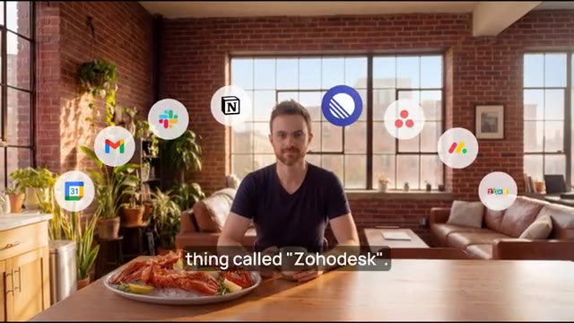
🔍 AgrandirExactement, non, j'adore ça. Et pour donner un peu de contexte à mon public, comment est-ce qu'on interagit avec ça maintenant ? Est-ce que c'est quelque chose qui tourne juste en arrière-plan, à exécuter toutes ces automatisations et tout, sans qu'on le voie vraiment ? Genre, est-ce que tu lui envoies des messages ? Est-ce que tu es, tu sais, sur l'interface Lindy ? Comment se déroule cette conversation avec notre assistant Lindy ?
Interface & Outils : AUCUNE
Contenu textuel & Code : AUCUN
Action / Démonstration : Discussion en visioconférence entre le présentateur et un invité.
Ouais, je pense que c'est une très bonne illustration de la très grande différence entre ce nouveau produit et l'ancien. Je vais montrer mon écran rapidement. Je pense que le montrer, c'est le plus simple. Voici l'ancien produit. Et ça, c'est l'un des cas d'usage les plus courants qu'on avait avec l'ancien produit, à savoir le récapitulatif quotidien. Donc recevoir un e-mail ou un message chaque matin du genre : voilà avec qui vous avez rendez-vous.
Interface & Outils : Navigateur web affichant l'application Lindy (Flow editor).
Contenu textuel & Code : Un diagramme de flux d'automatisation avec des blocs séquentiels ("On recurring schedule", "Check Meetings For The Day", "For Every Meeting", etc.).
Action / Démonstration : Le présentateur partage son écran pour montrer un ancien produit ou flux de travail automatisé.
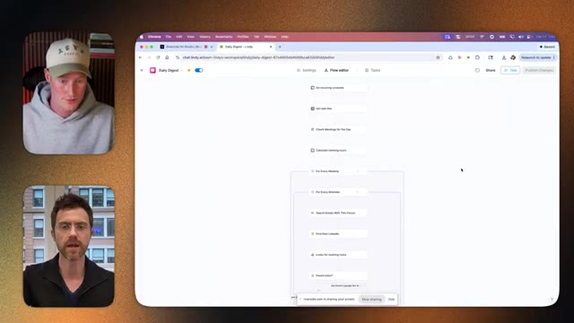
🔍 AgrandirC'est le contexte de votre réunion. Donc ce qu'il a fait dans ce cas, c'est du genre : hé, chaque matin tu te réveilles, tu regardes mes réunions de la journée, et puis pour chaque réunion et pour chaque participant de chaque réunion, tu fais des recherches sur eux, tu regardes leur LinkedIn, tu regardes mes anciennes notes de réunion avec eux, tu regardes mes anciens e-mails avec eux, et ensuite tu rassembles tout dans un très grand e-mail avec genre tout ce contexte.
Interface & Outils : Navigateur web affichant l'éditeur de flux de Lindy (chat.lindy.ai), avec incrustation vidéo des participants sur le côté gauche.
Contenu textuel & Code : Diagramme de flux de tâches automatisées : vérification des réunions du jour, calcul des heures, boucles itératives sur chaque réunion et chaque participant, recherche d'e-mails, recherche LinkedIn et consultation des notes de réunion.
Action / Démonstration : Présentation et explication visuelle d'un workflow d'automatisation d'intelligence artificielle configuré pour préparer les réunions quotidiennes et analyser les participants.
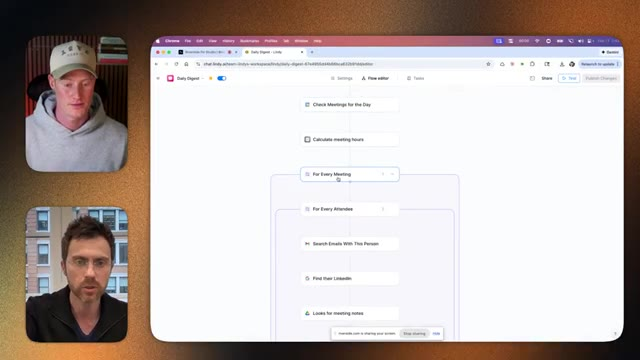
🔍 AgrandirExactement. Et c'était tout à fait du genre, bon, une fois qu'il a fait cette étape, passez à la suivante dans ce, je ne connais pas le mot exact pour ça, peut-être un peu programmatique ou tout simplement très structuré dans sa façon de fonctionner, n'est-ce pas ? On tenait l'IA en laisse. Et je pense qu'à mesure que les modèles ont évolué, la laisse est devenue inutile et, en fait, est devenue nuisible parce que le modèle perd en flexibilité lorsqu'il est en laisse.
Interface & Outils : Navigateur web Google Chrome affichant l'éditeur de flux de l'application Lindy.
Contenu textuel & Code : Diagramme de flux de travail (workflow) avec des blocs logiques : "Found notes?", "Get document", "Exit loop", "Send Daily Digest" et "Send message".
Action / Démonstration : Présentation et explication d'un flux de travail structuré et automatisé pas à pas dans une application d'IA.
Le nouveau produit, la façon dont il fonctionne, j'ai plein de captures d'écran ici. J'ai dû les compiler à l'avance parce que c'est évidemment des informations potentiellement sensibles. Mais je reçois juste ce genre de synthèse chaque matin et pour répondre à votre question, je le reçois sur l'IMF. Donc c'est exactement comme envoyer un SMS à un assistant humain. Et donc chaque matin, ça m'envoie un SMS et ça fait, hé, bonjour flow, genre aujourd'hui il fait beau, 61 degrés.
Interface & Outils : macOS Finder / Explorateur de fichiers
Contenu textuel & Code : Miniatures de captures d'écran de messages et d'interfaces de messagerie (potentiellement sensibles)
Action / Démonstration : Le présentateur montre des captures d'écran compilées à l'avance pour illustrer ses propos.
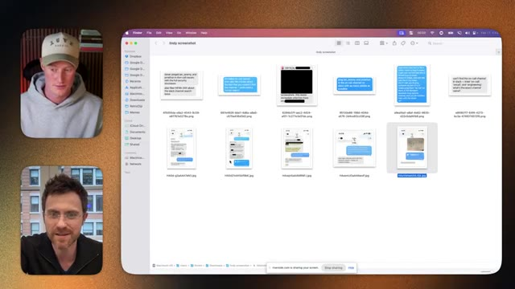
🔍 AgrandirTu as trois réunions sur ton calendrier. Au fait, tu as un e-mail urgent de Brandon que tu aimerais peut-être regarder. Ouais, et je veux t'interrompre ici ou ne pas t'interrompre, mais plutôt ajouter quelques infos ici. Ça t'a envoyé un SMS. Tu n'as pas eu besoin d'aller dire, hé, Lindy, qu'est-ce qu'il y a sur mon e-mail ou qu'est-ce qu'il y a sur ma liste pour mon calendrier aujourd'hui ? Si j'ai bien compris, Lindy a pris les devants pour te contacter par SMS et te dire, hé, c'est le matin.
Interface & Outils : macOS, application de messagerie / interface mobile Lindy.
Contenu textuel & Code : Résumé des réunions du calendrier et notification d'e-mail urgent de Brandon avec contre-offre.
Action / Démonstration : Présentation d'une démonstration d'interaction textuelle avec l'assistant IA Lindy.
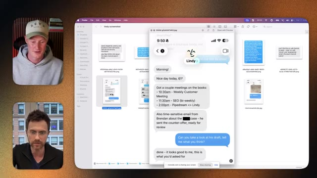
🔍 AgrandirGenre, laisse-moi juste genre te mettre au courant de tout. Parce que genre, c'est un peu ça le processus maintenant. Non, exactement. Donc c'est juste, c'est très proactif. Et je pense que la proactivité de la chose est un principe de financement vraiment très important pour ce produit. Par exemple, là, je vais utiliser un autre exemple. C'était, dès que je reçois un e-mail urgent, il m'envoie un SMS.
Interface & Outils : macOS Finder et application de visioconférence.
Contenu textuel & Code : Dossier contenant des captures d'écran de messages et d'interfaces (Lindy screenshot).
Action / Démonstration : Partage d'écran illustrant des exemples de processus automatisés ou de notifications.
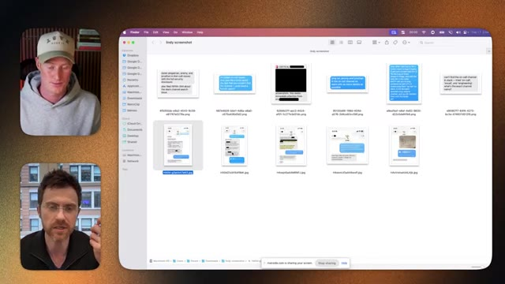
🔍 AgrandirOu par exemple, si je suis en réunion, Lindy se joint également aux réunions. Elle est du genre, j'utilise les pronoms elle. Elle prend des notes pendant les réunions et ainsi de suite. Si pendant la réunion je dis quelque chose du genre, hé, super, Brock, genre retrouvons-nous mercredis la semaine prochaine. Et tu réponds, ça marche. Lindy m'enverra un texto après, on fera juste genre, bonne réunion avec Brock.
Interface & Outils : Application de visioconférence et interface de messagerie/chat Lindy.
Contenu textuel & Code : Échanges textuels de type assistant virtuel (Lindy) concernant des mises à jour professionnelles et la vérification d'adresses.
Action / Démonstration : Le présentateur illustre les interactions possibles avec l'assistant Lindy à travers un partage d'écran.
Genre, est-ce que tu veux que j'envoie une invitation pour mercredi ? Ou si je dis... Lire la transcription de la réunion, puis utiliser cela comme contexte pour ensuite être proactif et en quelque sorte créer une liste d'actions. C'est tout à fait ça. Et, tu sais, après presque chaque réunion, tu as ces petits éléments d'action et ils sont comme des coupures de papier. Tu sais, c'est du genre, tu dois envoyer un e-mail de suivi. Tu dois en quelque sorte faire part à Bob de la décision qui vient d'être prise.
Interface & Outils : Application de messagerie / assistant IA Lindy sur interface mobile et macOS.
Contenu textuel & Code : Échanges textuels avec un assistant IA gérant des contre-offres, des vérifications d'adresse et l'annulation de réunions.
Action / Démonstration : Démonstration de l'utilisation d'un agent IA conversationnel pour automatiser la gestion des tâches et de l'agenda.
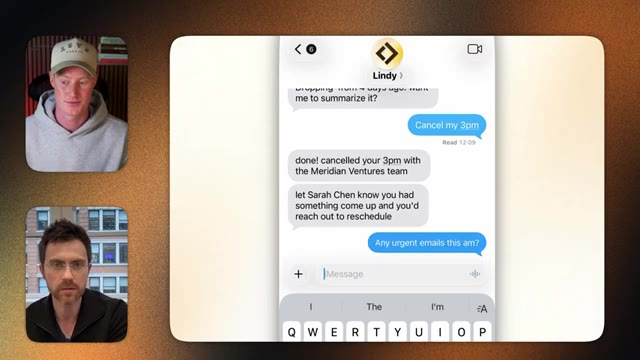
🔍 Agrandirtu dois genre envoyer une invitation de calendrier de suivi et ces choses-là genre ça a l'air de rien mais l'analogie que j'ai entendue et que j'ai vraiment aimée c'est genre tu sais je ne sais pas si tu sais genre 95 pour cent des accidents d'avion se produisent pendant le décollage et l'atterrissage donc peu importe si tu voles de genre San Francisco à Paris ce qui fait genre un vol de 11 heures ce sont les 10 minutes de décollage et d'atterrissage qui sont de loin les plus dangereuses genre la croisière c'est en fait vraiment facile et donc si tu devais voler de San Francisco à New York et atterrir et décoller dans chaque ville en chemin ce serait un vol misérable ce serait très long et ce serait très dangereux et donc le
Interface & Outils : Application de messagerie / assistant IA Lindy sur macOS.
Contenu textuel & Code : Échanges textuels de mise à jour d'une offre commerciale et de vérification d'adresse avec l'agent Lindy.
Action / Démonstration : Présentation d'une interface de démonstration d'agent conversationnel IA.
l'analogie ici est que c'est ce qu'on nous demande de faire chaque jour au travail nous voulons tous naviguer en croisière parce que c'est fluide et c'est c'est plus facile et c'est moins dangereux nous voulons penser stratégiquement à nos entreprises comme à 10 000 pieds d'altitude mais on nous demande de décoller et d'atterrir 50 fois par jour tu veux penser stratégiquement mais ah putain je dois envoyer un e-mail de suivi à bob ah il y a cet événement dans le calendrier que j'ai oublié je dois sauter là-dessus et donc je pense que l'opportunité qui s'ouvre en ce moment parce que les modèles sont devenus si bons c'est qu'ils peuvent tourner constamment en arrière-plan pour toi
Interface & Outils : macOS Finder et application de messagerie mobile/assistant IA (Lindy)
Contenu textuel & Code : Une conversation textuelle montrant des échanges sur des adresses postales et des mises à jour de contrats (ex. "1841 Market St", "101 New Montgomery").
Action / Démonstration : Le présentateur illustre visuellement un exemple d'interaction textuelle ou de gestion de tâches automatisée via un assistant intelligent pour appuyer son analogie.
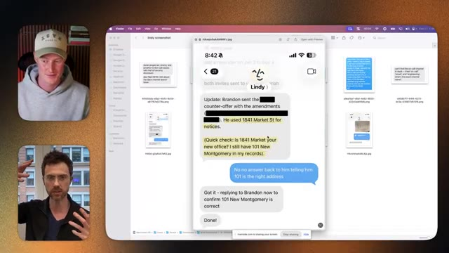
🔍 AgrandirIls peuvent être votre acolyte qui est avec vous toute la journée, qui est comme dans votre boîte de réception avec vous, qui est dans vos réunions avec vous. Et qui attrape tous ces moments de décollage et d'atterrissage et qui s'occupe du décollage et de l'atterrissage pour vous. C'est vrai, j'adore ça. C'est une si bonne analogie parce que ça essaie juste de réduire cette friction de tout ce travail machinal et manuel. Et genre une chose que j'utilise avec l'assistant Lindy peut-être ces cinq, six derniers jours depuis que vous l'avez sorti.
Interface & Outils : Application de messagerie type chat (Lindy AI) sur macOS.
Contenu textuel & Code : Interface de chat textuel illustrant une interaction avec un assistant intelligent gérant des mises à jour et vérifiant des adresses.
Action / Démonstration : Présentation visuelle d'un exemple concret d'interaction avec l'assistant IA Lindy.
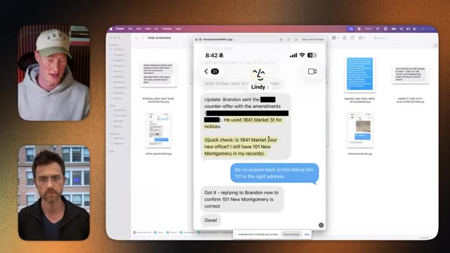
🔍 AgrandirEt une chose pour laquelle je l'utilise personnellement beaucoup, c'est un peu comme un second cerveau, tu vois, à la fin de la journée, je vais littéralement, même pas juste lui envoyer un message texte, je vais lui donner un message vocal et dire, hé, genre un mémo vocal, et faire, hé, voici sur quoi je travaille, voici les miniatures que je dois faire pour mes vidéos en préparation, est-ce que tu peux chercher des titres en te basant sur mes précédents titres YouTube ? Et non seulement ça va faire preuve de créativité et trouver des titres, mais ça va de manière proactive analyser mon YouTube, regarder mes vidéos précédentes, trouver celles qui fonctionnent, et ensuite créer des titres basés sur ça. Donc pour moi, ça a été la meilleure chose au monde pour lui balancer tout ce qui me passe par la tête en gros.
Interface & Outils : Application de messagerie / assistant IA (Lindy) sur macOS.
Contenu textuel & Code : Fils de discussion textuels montrant des échanges de messages et des vérifications d'informations (adresses, offres).
Action / Démonstration : Démonstration de l'utilisation d'un assistant virtuel pour la gestion de messages et le suivi de tâches.
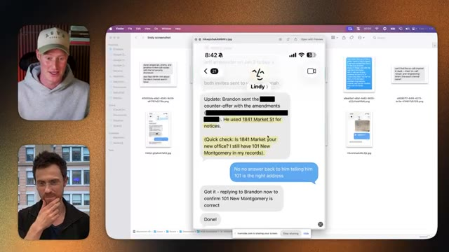
🔍 AgrandirÀ la fin de la journée, ou peut-être le matin ou même au milieu de la journée quand je suis stressé et que je dis, hé, qu'est-ce qu'il y a sur ma liste de choses à faire que je dois vraiment faire maintenant ? Et elle va simplement s'exécuter et le faire pour moi parce qu'elle est connectée à toutes ces différentes applications que j'utilise, ce qui a été la chose la plus incroyable à ce sujet. À 100 %. Je fais ça tellement souvent. Donc l'un de mes cas d'utilisation préférés, c'est qu'à la fin de la semaine, j'envoie un message à ma Lindy et je lui dis que j'ai un message à ce sujet quelque part par ici.
Interface & Outils : Finder macOS, application de visioconférence (type Zoom ou Google Meet).
Contenu textuel & Code : Miniatures de captures d'écran montrant diverses conversations textuelles et interfaces mobiles.
Action / Démonstration : Partage d'écran explorant un dossier de captures d'écran ou de preuves visuelles lors d'une visioconférence.
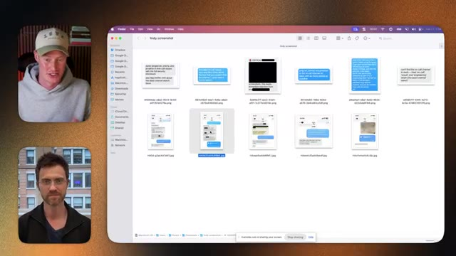
🔍 AgrandirPar exemple, donc chaque semaine j'envoie un message à mon agent et je suis du genre, hé, ma priorité pour la semaine prochaine est de travailler sur X. En ce moment c'est le produit. Ils font beaucoup de travail sur le produit. Et je suis du genre, est-ce que tu peux s'il te plaît me dire, faire un audit de calendrier pour moi. Du genre regarde mon calendrier la semaine prochaine et dis-moi combien d'heures de réunions est-ce que j'ai et combien correspondent à cette priorité. Et ensuite qu'est-ce que tu recommandes que je déplace ?
Interface & Outils : Application de messagerie / agent conversationnel (type Lindy ou interface de chat).
Contenu textuel & Code : Un message utilisateur (« my prio is to work on product next week... ») demandant d'analyser le calendrier, suivi d'une réponse structurée détaillant les heures de réunion et la répartition du temps de travail sur les sujets produit et ingénierie.
Action / Démonstration : Présentation d'un exemple concret d'utilisation d'un agent IA pour auditer et optimiser son planning hebdomadaire en fonction des priorités professionnelles.
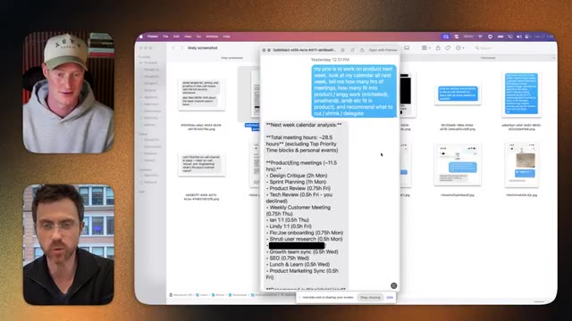
🔍 AgrandirQuelle réunion puis-je annuler ? Qu'est-ce que je peux déléguer ? Pourquoi est-ce que je ne peux tout simplement pas y assister afin de faire plus de place pour, genre, mes vraies priorités ? Aussi, pour rebondir sur ce que tu disais à propos de l'entraîner comme ce partenaire de départ qui, en gros, compile des informations et les envoie vers, genre, différents systèmes et différents fichiers de notes et ainsi de suite. C'est l'un de mes cas d'usage préférés. Chaque fois que nous faisons, genre, du tableau blanc, des séances de brainstorming avec l'équipe et quand nous avons terminé, j'envoie une photo de la séance à Lindy et j'envoie un mémo vocal et je fais, genre, hé, c'était un brainstorming sur X, Y et Z et elle peut voir le tableau blanc.
Interface & Outils : macOS Finder et aperçu d'une application mobile de messagerie intelligente.
Contenu textuel & Code : Interface utilisateur affichant des aperçus de fichiers et une conversation textuelle et vocale avec un assistant nommé Lindy.
Action / Démonstration : Présentation visuelle d'un exemple d'interaction avec un assistant IA pour illustrer l'automatisation de tâches à partir d'une photo de tableau blanc.
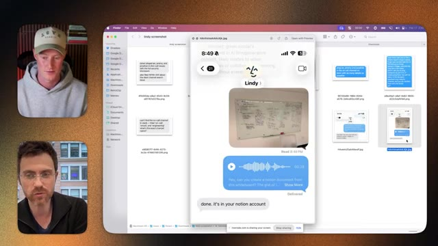
🔍 AgrandirDonc je me dis, c'était un brainstorming sur X, Y et Z. Peux-tu s'il te plaît simplement organiser ce tableau blanc en une note propre et la mettre sur Notion ? Donc ouais, vas-y. Non, j'allais juste dire que c'est tellement fou et je veux faire une remarque parce que c'est, c'est un exemple parfait parce qu'il y a quelques années, peut-être il y a environ deux ans, quand j'ai découvert pour la première fois l'utilisation de votre plateforme, j'avais eu cette même idée pour un cas d'usage.
Interface & Outils : macOS, application de messagerie / assistant Lindy, interface de chat.
Contenu textuel & Code : Une photo d'un tableau blanc rempli de notes, un message vocal d'une durée de 0:28 avec la transcription "hey, can you create a notion document from this whiteboard?", et la réponse de l'assistant "done. it's in your notion account".
Action / Démonstration : Démonstration de l'utilisation d'un agent IA (Lindy) pour traiter une image de tableau blanc et créer automatiquement une note sur Notion à partir d'une consigne vocale.
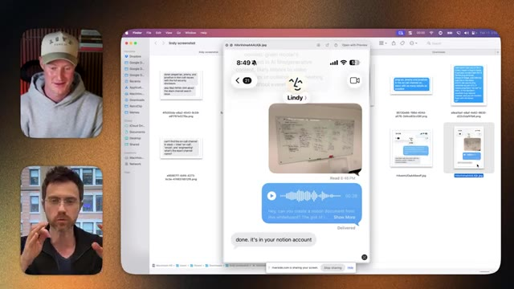
🔍 AgrandirJ'étais genre, ok, j'ai ce genre de bloc-notes. Je vais coller ça dedans et je vais essayer de trouver une automatisation qui pourrait automatiquement genre catégoriser ça pour moi ou, tu sais, faire ce que j'avais besoin qu'elle fasse en arrière-plan. Et c'était tellement chiant d'essayer de comprendre genre, ok, comment est-ce que je fais pour que l'IA analyse l'image ? Comment est-ce que genre, c'est quoi le processus pour ça ? Et ensuite qu'est-ce que je fais ici ? Avec le nouvel assistant Lindy, tu n'as pas besoin de configurer tout ça toi-même.
Interface & Outils : macOS Finder / Application de visioconférence (split-screen).
Contenu textuel & Code : Fichiers d'images miniatures nommés avec des identifiants alphanumériques (fichiers PNG).
Action / Démonstration : Navigation et affichage d'un dossier de captures d'écran pendant la discussion.
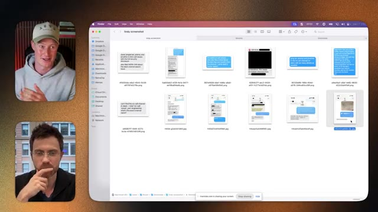
🔍 Agrandir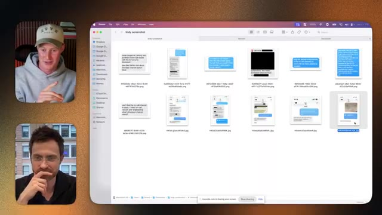
🔍 AgrandirL'IA s'améliore. Donc les modèles d'images sont capables d'extraire du texte des images pour rendre cela réellement possible maintenant. Mais le fait même que nous n'ayons plus besoin de concevoir le flux pour créer ceci est la meilleure partie de tout ça, parce qu'il vous suffit littéralement de demander à votre assistant et il sait comment construire tout ce truc. À 100 %. Ça devrait juste fonctionner. Ouais. Genre, la technologie devrait juste fonctionner.
Interface & Outils : Interface de visioconférence et système d'exploitation macOS (explorateur de fichiers).
Contenu textuel & Code : Captures d'écran et interface de messagerie textuelle.
Action / Démonstration : Le présentateur explique le fonctionnement des agents conversationnels et le traitement automatique d'images.
Tu ne devrais pas avoir à construire un agent pour faire avancer les choses. C'est vrai. Je suis d'accord à 100 %. Donc je suppose que cela m'amène peut-être à l'une de mes prochaines questions. Donc pour votre avenir à vous, évidemment, parce que beaucoup d'entre vous connaissent des plateformes comme n8n ou make.com, vous savez, ce sont des constructeurs d'interfaces visuelles et donc vous pensez, bon, si j'ai besoin de créer une automatisation, je vais utiliser Lindy et la construire moi-même. Maintenant que ce n'est plus vraiment aussi nécessaire, où essayez-vous de vous positionner à long terme pour être en quelque sorte cet assistant IA incontournable, pour ainsi dire ? Oui, alors les flux de travail, comme les flux de travail Lindy, sont toujours là et vous pouvez toujours, vous pouvez toujours construire
Interface & Outils : macOS Finder, appel vidéo en visioconférence.
Contenu textuel & Code : Fichiers image miniatures affichant des aperçus de conversations textuelles.
Action / Démonstration : Navigation dans les fichiers locaux du système pour montrer des exemples de captures d'écran.
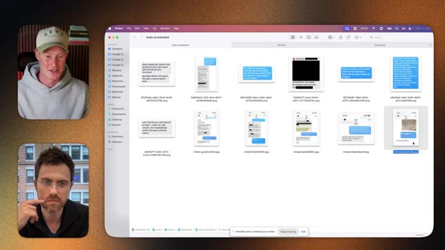
🔍 Agrandirles. Et ils sont parfaits pour pas mal de cas d'usage pour des personnes beaucoup plus techniques qui ont le temps et la capacité technique de les construire. Pour certains cas d'usage, ils sont meilleurs. Ils sont comme plus fiables parce qu'ils ont la laisse et ils sont plus rentables et ainsi de suite. Mais en ce moment, vous savez, c'est vraiment comme un retour à nos sources. Comme si nous construisions vraiment un système Lindy AI, ce qui est là où nous avons commencé initialement. Et je pense que la technologie n'était tout simplement pas prête.
Interface & Outils : Fenêtre de navigateur ou éditeur de texte (Image #1), Explorateur de fichiers macOS Finder (Image #3).
Contenu textuel & Code : Instructions textuelles structurées en balises (workflow, prompt, email_template_guidelines) pour un cas d'usage IA (Image #1). Grille de vignettes d'images et de captures d'écran (Image #3).
Action / Démonstration : Présentation d'exemples de prompts et de fichiers de démonstration pour illustrer l'explication technique.
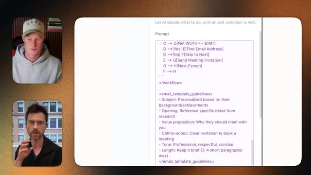
🔍 Agrandir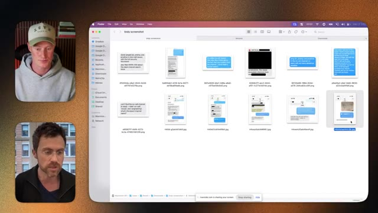
🔍 AgrandirComme si le modèle n'était vraiment pas encore assez bon. Mec, quand nous avons commencé, c'était genre avant GPT-4, c'était GPT-3.5, des fenêtres de contexte de 4 000 jetons. Rien ne fonctionnait. Et même GPT-4 à l'époque nous a tous époustouflés, évidemment, mais ce n'est rien comparé aux derniers modèles grand public. C'est là que nous nous situons. Je pense que peut-être une comparaison que nous entendons de temps en temps, c'est qu'il est difficile en février 2026 de ne pas mentionner OpenCLAR.
Interface & Outils : macOS Finder.
Contenu textuel & Code : Dossier contenant des captures d'écran et des images de messages textuels.
Action / Démonstration : Partage d'écran du Finder pour illustrer une discussion sans démonstration technique pertinente.
C'est juste, ça a vraiment été un tel phénomène. Et je pense que la façon dont je le compare, c'est que je le compare à genre Linux versus Mac OS. Genre, tout comme Linux, OpenCloud est cette sorte d'explosion étrange et vibrante qui sort de nulle part. C'est ça ? Genre, Linux est sorti de la chambre de Linus Torvalds, juste un type bizarre venu de Suède.
Interface & Outils : Gestionnaire de fichiers Finder (macOS) et application de visioconférence.
Contenu textuel & Code : Miniatures de captures d'écran de discussions textuelles et d'interfaces mobiles.
Action / Démonstration : Le présentateur discute et partage son écran en montrant un dossier contenant des captures d'écran de messages.
Exactement ? Et puis il y a comme cet immense engouement dans la communauté open source autour de ça. Et donc les ingénieurs en quelque sorte le couronnent comme le nouveau standard. Ça a vraiment explosé. Et maintenant c'est intéressant parce que si on avance rapidement, je sais pas, genre de trois ou quatre décennies, trois décennies. Linux a gagné, mais d'une manière très détournée. Genre tout le monde utilise au moins Unix sans s'en rendre compte.
Interface & Outils : Système d'exploitation macOS (Finder)
Contenu textuel & Code : Dossier contenant des vignettes de captures d'écran de messages ou de discussions textuelles.
Action / Démonstration : Navigation dans les fichiers du système d'exploitation pour montrer des exemples de captures d'écran.
Comme votre iPhone, vos appareils Android fonctionnent sur Linux. Votre Mac fonctionne sur le système d'exploitation Unix. Et donc je pense que c'est là que je fais la comparaison. C'est comme si Linux et OpenCloud étaient de merveilleuses technologies. Ce ne sont pas des produits. Et il ne s'agit pas seulement du déploiement. C'est une vraie galère. Le déploiement est une vraie galère.
Interface & Outils : macOS Finder et application de visioconférence (type Zoom/Google Meet)
Contenu textuel & Code : Explorateur de fichiers affichant de nombreuses miniatures de captures d'écran de conversations ou d'interfaces.
Action / Démonstration : Le présentateur illustre ses propos en partageant l'écran de son ordinateur et en montrant des fichiers de captures d'écran.
Mais vous voyez beaucoup de ces produits qui proposent du genre de déployer Open Cloud en un clic, ce qui ne fait toujours pas un produit une fois que vous avez déployé Open Cloud en un clic, ce n'est toujours pas un produit axé sur un avis tranché qui fait des choses prêtes à l'emploi pour vous, vous devez le configurer et je ne saurais vous dire combien de gens j'entends ici me dire ah je dois encore configurer Open Cloud, genre on dirait une corvée, vous savez, c'est du genre et quand je leur dis, c'est du genre Open Cloud ne vaut pas votre week-end, mec, genre la technologie est censée être à votre service et non l'inverse, vous savez, donc la plupart des gens, ils l'ont sur leur liste de tâches, ils ne veulent pas le faire, c'est un, ils ne veulent pas configurer Open Cloud.
Interface & Outils : macOS Finder et application de visioconférence.
Contenu textuel & Code : Dossier contenant des vignettes de captures d'écran de messages ou de documents.
Action / Démonstration : Partage d'écran du Finder montrant des fichiers d'images de captures d'écran.
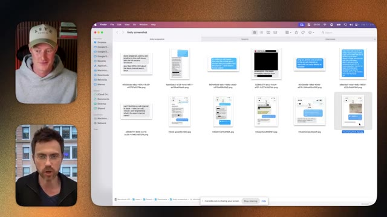
🔍 AgrandirEt je dirais, donc 90 % des gens que je connais veulent le faire, ils ne l'ont pas fait. Et puis, genre 90 % des gens restants, ils ont commencé et ils l'ont réellement déployé. Donc le problème n'est pas le déploiement. C'est juste qu'ils se disent, ah, d'accord. Une fois que c'est déployé, en fait, il y a beaucoup de corvées à faire pour que ça devienne réellement utile. Et donc je pense simplement que, encore une fois, c'est l'histoire de Linux et de Mac OS.
Interface & Outils : Fenêtre du Finder macOS (partage d'écran)
Contenu textuel & Code : Miniatures de captures d'écran textuelles et de conversations sans code ni indicateur technique
Action / Démonstration : Présentation orale et discussion générale sans manipulation technique ou graphique spécifique
Genre, ce n’est pas un produit fini. Et je pense que c’est une nouvelle brique de construction importante que des startups comme Owels pourraient utiliser pour construire un produit final. C'est ça. Ouais, à 100 %. Je suis tout à fait d'accord. Genre, personnellement, j'ai configuré OpenClaw. Je l'utilise. Et, tu sais, j'utilise à la fois Lindy et OpenClaw, pour être totalement transparent.
Interface & Outils : macOS Finder
Contenu textuel & Code : Dossier contenant des miniatures de captures d'écran de messages ou d'interfaces.
Action / Démonstration : Navigation dans un dossier de captures d'écran pour illustrer la discussion.
Mais une chose que j'ai remarquée, c'est que j'utilise Lindy pour des informations plus sensibles. Donc j'utilise ça. Je texte évidemment par SMS, mais par exemple j'utilise Lindy pour mes e-mails. Je ne vais pas utiliser OpenClaw personnellement pour ce cas d'usage, parce que je ne lui fais tout simplement pas confiance personnellement. Vous savez, je ne... je ne suis pas technique.
Interface & Outils : Interface de messagerie mobile (iMessage) sur smartphone et disposition en incrustation vidéo (picture-in-picture) avec deux participants.
Contenu textuel & Code : Échange de messages textuels professionnels liés à la coordination (messages concernant Tom, David de Sequoia et des mises à jour sur Slack).
Action / Démonstration : Démonstration visuelle d'une interface de messagerie textuelle illustrant l'utilisation d'assistants IA pour la communication par SMS.
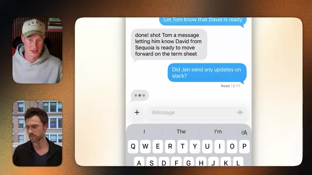
🔍 AgrandirDonc j'ai toujours cette peur du genre, mon Dieu, est-ce que j'ai mal configuré ça ? Du genre, est-ce que je vais lui donner accès à quelque je ne devrais probablement pas donner accès ? Est-ce que je vais lui donner le mauvais prompt ? Je ne vais pas, est-ce que je ne vais pas mettre en place les bonnes balises de sécurité ? Ouais. Je serais intéressé d'entendre un peu où vous voulez vous positionner. Du genre, peut-être en étant ça, du genre, je ne veux pas vous mettre des mots dans la bouche, et peut-être en étant cette alternative sûre que des gens non techniques ou n'importe qui peut utiliser.
Interface & Outils : macOS Finder et visioconférence.
Contenu textuel & Code : Dossier contenant des vignettes d'images de captures d'écran, montrant potentiellement des conversations ou des interfaces.
Action / Démonstration : Le présentateur discute tout en affichant un dossier de captures d'écran sur son écran partagé.
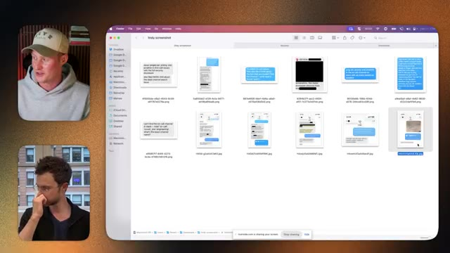
🔍 Agrandirdonc ils n'ont pas à faire face aux retombées négatives potentielles de l'utilisation de quelque chose comme OpenClaw. Ouais, je pense qu'il est difficile en février 2026 de ne pas mentionner OpenClaw. Je pense qu'en un mot, nous sommes plus sécurisés et on parle genre de mille années supplémentaires pour tout vendre. Je pense qu'OpenClaw est une chose formidable, mais écoutez, il a 80 jours. Nous travaillons là-dessus depuis trois ans et il y a donc eu pas mal de failles de sécurité qui en découlent. Nous avons passé beaucoup de temps sur la sécurité. Nous avons donc cette chose que nous appelons un bouclier d'agent qui vous protège, vous et vos données, ainsi que l'agent qui construit comme de nombreuses couches de protection entre vos données et vos agents de telle sorte que personne ne peut injecter des commandes dans votre agent Lindy, comme les gens ne peuvent pas simplement envoyer un e-mail à votre agent Lindy
Interface & Outils : macOS Finder, application de visioconférence.
Contenu textuel & Code : Dossier contenant des miniatures de captures d'écran de messages et d'interfaces textuelles.
Action / Démonstration : Partage d'écran et discussion entre les deux intervenants.
et l'amener à faire des choses comme il y a beaucoup de couches de protection au milieu et ensuite c'est beaucoup plus facile de faire comme avec OpenClaw je le compare souvent à Linux c'est comme c'est un magnifique morceau de technologie ce n'est pas un produit final il ne s'agit pas seulement du déploiement vous savez il y a beaucoup de produits qui sortent pour vous permettre de déployer OpenClaw en un clic mais une fois que vous l'avez déployé vous devez toujours faire en sorte qu'il fasse quelque chose d'utile pour vous.
Interface & Outils : macOS Finder / Explorateur de fichiers
Contenu textuel & Code : Dossier contenant des captures d'écran de messages textuels (fichiers PNG et JPG)
Action / Démonstration : Navigation et affichage d'un dossier de captures d'écran dans l'interface de macOS.
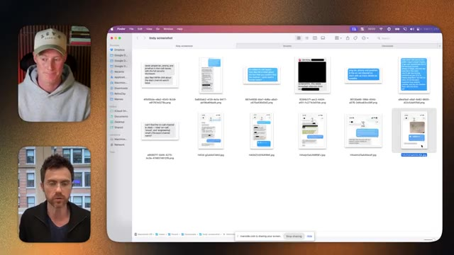
🔍 AgrandirCe n'est pas un produit clé en main avec des avis tranchés où tout est inclus. C'est ce que nous sommes. C'est une bonne façon de le formuler. Un produit avec tout inclus. Ouais. Parce qu'encore une fois, pour revenir à ce que je disais tout à l'heure, j'utilise vraiment Lindy pour toutes les informations sensibles. Je ne vais pas donner un accès général à mes e-mails, toutes ces choses-là, mais ouais, ça m'intéresserait d'entendre. Alors, est-ce que vous avez travaillé à reformuler et à recréer ce produit et à le reconditionner dans le nouvel assistant Lindy ?
Interface & Outils : Système d'exploitation macOS (Finder) et application de visioconférence (type Riverside).
Contenu textuel & Code : Dossier de captures d'écran ("lindy screenshot") affichant des aperçus miniatures de messages textuels et d'interfaces de chat. [DESC_IMAGE_3]
Action / Démonstration : Navigation dans les fichiers locaux et présentation visuelle de captures d'écran d'exemples d'utilisation.
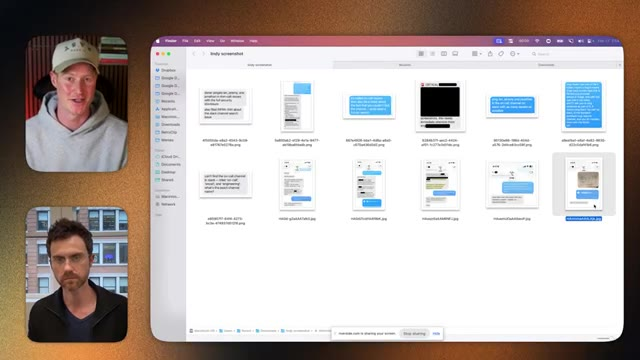
🔍 Agrandir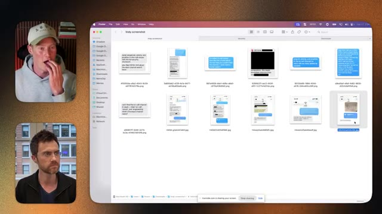
🔍 AgrandirEst-ce que vous travaillez là-dessus depuis ces deux derniers mois, ou est-ce que c'est quelque chose que vous avez décidé de changer parce que vous avez vu ce que OpenClaw est en train de faire ? Parce que je suppose que c'est quelque chose que vous aviez dans les tuyaux et que vous envisagez depuis pas mal de temps maintenant. Oh, à 100 %. On travaille là-dessus précisément depuis environ six mois, ce qui est comme une éternité en IA, et on a vraiment pris notre temps pour bien faire les choses.
Interface & Outils : macOS Finder / Explorateur de fichiers
Contenu textuel & Code : Dossier contenant des miniatures de captures d'écran textuelles ou de messages (type chat/Slack) avec des noms de fichiers alphanumériques.
Action / Démonstration : Le présentateur ou l'invité montre des documents ou des captures d'écran stockés sur son ordinateur.
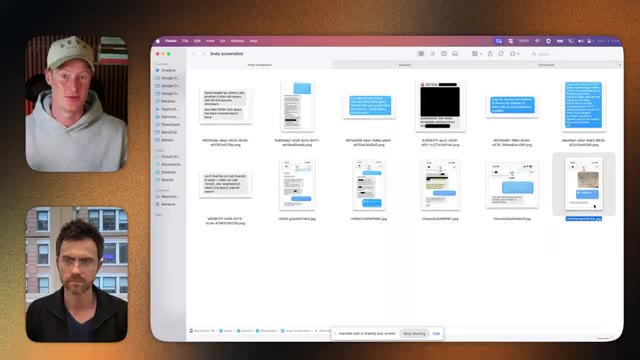
🔍 AgrandirMais vraiment, même avant ces six mois, cela s'appuie sur toute l'infrastructure, l'échafaudage et la technologie que nous avons construits au cours des trois dernières années. Donc, par exemple, dès aujourd'hui et sans configuration particulière, Lindy peut utiliser un navigateur Web pour faire des achats pour vous sur Amazon, rechercher des informations et tout le reste. C'est une annonciation que nous avons faite il y a neuf mois, qui concerne l'utilisation du navigateur et l'utilisation de l'ordinateur.
Interface & Outils : macOS Finder et application de visioconférence.
Contenu textuel & Code : Dossier de captures d'écran ("lindy screenshot") affichant des aperçus d'échanges de messages et de conversations de l'outil Lindy.
Action / Démonstration : Présentation et navigation dans les captures d'écran illustrant les capacités et l'interface de l'outil Lindy.
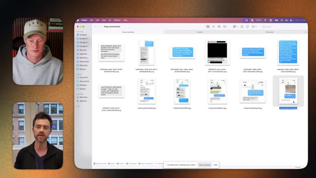
🔍 AgrandirDonc Lindy est capable d'utiliser toutes ces briques de construction que nous avons construites au fil des ans. C'est exact. Et c'est d'ailleurs quelque chose que j'allais aborder. Je suis content que tu aies rafraîchi ma mémoire, l'utilisation du navigateur. Parce que Claude, je veux dire, j'imagine que c'est une priorité. Euh Claude Sonnet 4.6 vient de sortir et apparemment l'utilisation du navigateur est, vous savez, même un tout petit peu meilleure que celle de Sonnet 4.5. Donc je suppose que l'utilisation du navigateur que vous avez ne fera que s'améliorer à mesure que ces LLM s'amélioreront et que la technologie d'IA derrière tout ça s'améliorera, parce que c'est vraiment ce qui me passionne, c'est d'avoir un agent qui non seulement peut, vous savez, planifier une réunion pour moi parce qu'il est connecté à, vous savez, Google Calendar, mais qui est capable de partir et de cliquer réellement à l'intérieur d'un navigateur, vous savez.
Interface & Outils : Système d'exploitation macOS (Finder), application de visioconférence.
Contenu textuel & Code : Dossier Finder contenant des fichiers PNG de captures d'écran miniatures (ex: lindy screenshot).
Action / Démonstration : Navigation et affichage d'un dossier de fichiers sur l'écran partagé pendant la discussion.
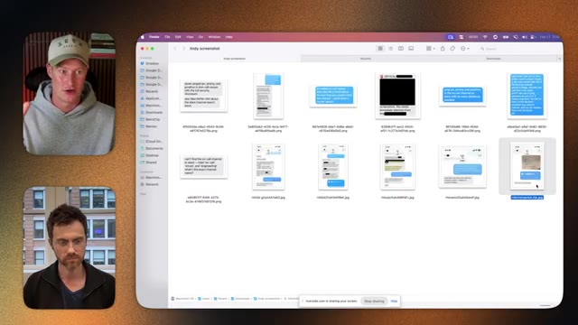
🔍 AgrandirQue ce soit sur un vrai navigateur sur mon ordinateur ou un navigateur virtuel, ce qui, je crois, est la façon dont vous le faites. Quelles sont vos réflexions sur les capacités d'utilisation du navigateur ? Est-ce quelque chose qui, selon vous, va vraiment être la prochaine grande nouveauté ? Ou est-ce que ce sera plutôt simplement connecter ces applications et n'utiliser l'utilisation du navigateur que si vous ne pouvez pas vous connecter à ces applications ? Oui, je pense que c'est les deux.
Interface & Outils : Système d'exploitation macOS, explorateur de fichiers (Finder) et interface web de partage.
Contenu textuel & Code : Fichiers d'images miniatures et interface de configuration de partage pour un agent de génération de leads.
Action / Démonstration : Navigation dans les fichiers locaux et démonstration du partage d'un agent conversationnel.
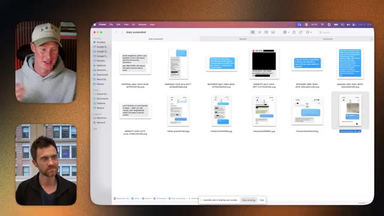
🔍 AgrandirJe pense que l'utilisation du navigateur va être en quelque sorte l'interface ultime pour les LLM. Mais je pense, oui, que chaque fois que vous pouvez utiliser des intégrations directes et des API, c'est évidemment beaucoup plus rapide, beaucoup moins cher, beaucoup plus fiable, vous devriez donc privilégier cela par défaut. Mais vous seriez surpris de voir à quel peu de choses vous pouvez faire avec une API par rapport à ce que vous pouvez faire avec un navigateur.
Interface & Outils : macOS Finder affichant un dossier de captures d'écran, avec deux fenêtres de visioconférence incrustées sur le côté gauche.
Contenu textuel & Code : Miniatures de captures d'écran de discussions textuelles et d'interfaces de messagerie (probablement des exemples d'interactions d'agents IA ou de tests de navigation).
Action / Démonstration : Le présentateur illustre ses propos sur l'utilisation des interfaces et des navigateurs en montrant des exemples de données visuelles manipulées par des agents.
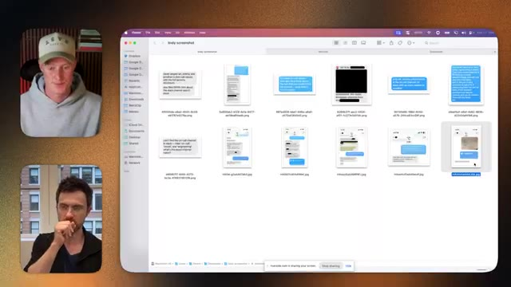
🔍 AgrandirC'est intéressant, tu sais, il y a environ deux ans, la planification a toujours été un grand cas d'usage pour nous. Et c'est intéressant, même quand quelqu'un m'envoie un lien Calendly, je suis un peu paresseux pour cliquer et regarder mes horaires et tout ça. Je veux juste que ça se fasse automatiquement. Et donc nous sommes en contact avec l'équipe de Calendly, qui est en fait juste en face de la rue depuis longtemps.
Interface & Outils : macOS Finder
Contenu textuel & Code : Dossier contenant des miniatures de captures d'écran textuelles et d'interfaces de messagerie.
Action / Démonstration : Navigation et présentation de fichiers visuels à l'écran.
Et on était du genre, hey, est-ce que vous pouvez s'il vous plaît nous donner une API ? Donc si quelqu'un envoie un lien Calendly à un utilisateur de Linde, Linde peut réserver des créneaux via l'API. Et Calendly était du genre, pas vraiment. On ne veut pas vous laisser faire ça. Genre, on ne veut pas être désintermédiés. On ne veut pas offrir d'API. Et en plus, ça va ouvrir la porte aux bots et tout ce genre de trucs. Et ce que je leur ai dit, c'est, vous savez, écoutez, on va faire ça de la manière la plus simple ou de la manière la plus dure.
Interface & Outils : Système d'exploitation macOS (Finder) et interface de visioconférence.
Contenu textuel & Code : Dossier de captures d'écran (fichiers d'images miniatures) illustrant des discussions ou des interfaces utilisateur.
Action / Démonstration : Partage d'écran illustrant des documents de travail ou des exemples visuels lors de l'interview.
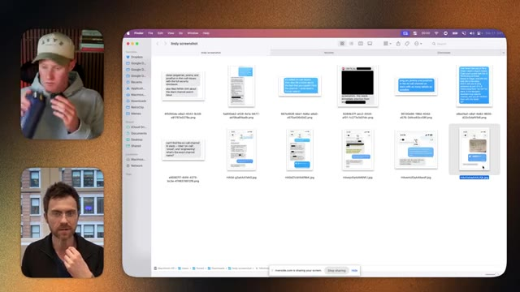
🔍 AgrandirC'est comme si l'utilisation du navigateur arrivait, tu vois ? Et je pense qu'à l'époque, ils ne m'ont pas pris tout à fait au sérieux. Je pense que maintenant, si. Et ouais, tu sais, maintenant quand j'ai quelqu'un — avancer rapide de deux ans — genre, l'interface utilisateur de Calendly est plus que suffisamment simple pour que des agents de navigation puissent la gérer. Et donc, chaque fois que quelqu'un m'envoie un lien Calendly, je ne prends même pas la peine d'y jeter un œil.
Interface & Outils : Système d'exploitation macOS (Finder) et logiciel de visioconférence.
Contenu textuel & Code : Dossier du Finder contenant des fichiers PNG de captures d'écran textuelles et mobiles.
Action / Démonstration : Navigation et affichage d'un dossier de captures d'écran partagé lors de la discussion.
Je le transfère simplement à ma Lindy et elle regarde mon calendrier, elle a mes préférences de réservation et elle trouve simplement l'heure et le réserve sur Calendly. Ouais, non, j'adore ça. Je suppose que ça m'amène un peu à ma prochaine question. Genre, quels sont peut-être des cas d'utilisation originaux pour lesquels vous utilisez l'assistant Lindy et que quelqu'un pourrait négliger ? Ouais, celui-ci est l'un de mes préférés. C'est vraiment bizarre.
Interface & Outils : Application Lindy (interface d'assistant IA avec tableau de bord et options de discussion).
Contenu textuel & Code : Commandes textuelles et prompt d'assistance (« What urgent items need my attention this morning? ») avec des options de tâches automatisées.
Action / Démonstration : Démonstration de l'interface de l'assistant IA Lindy et de ses fonctionnalités de gestion des tâches.
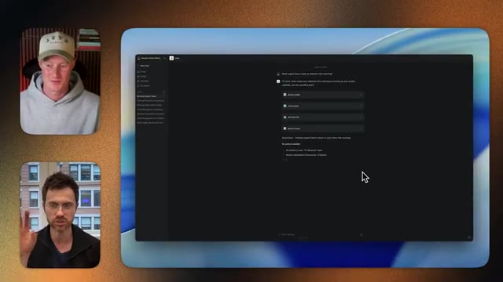
🔍 AgrandirC'est, je dirais, utiliser Lindy, et c'est quelque chose que j'entends de la part de mes amis également et de nos utilisateurs, utiliser Lindy a changé ma relation avec l'ordinateur. Je vais vous dire exactement ce que je veux dire. C'est un cas d'utilisation quotidien pour moi. J'aime, parfois je suis dans des réunions d'affilée et je suis au milieu d'un truc pour des réunions après genre cinq heures. Et donc je n'ai pas regardé ma boîte de réception pendant cinq heures.
Interface & Outils : macOS Finder, application mobile Lindy, interface de visioconférence.
Contenu textuel & Code : Captures d'écran de l'interface de chat de l'assistant IA Lindy affichant des messages texte et des notes vocales.
Action / Démonstration : Partage d'écran et présentation d'exemples d'utilisation de l'assistant IA Lindy par le présentateur.
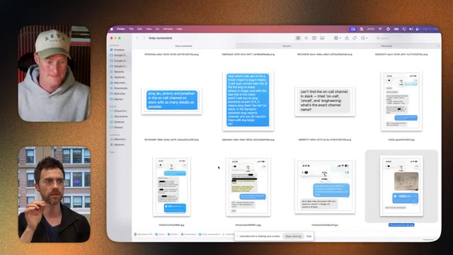
🔍 Agrandir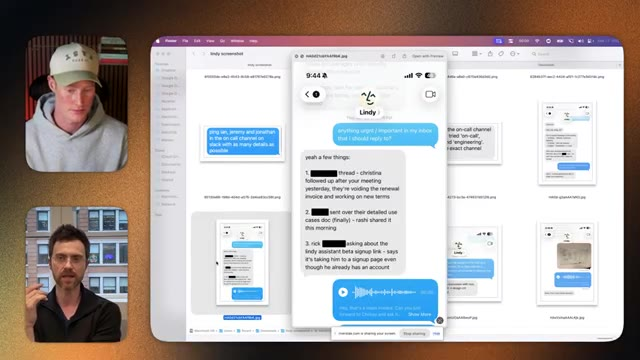
🔍 AgrandirEt j'aime généralement être très, très réactif par e-mail. Et donc après ces cinq heures de réunions, d'ailleurs, je n'ai même plus vraiment envie de regarder mes e-mails. J'avais juste envie de sortir et d'aller me promener après cinq heures d'appels d'affilée. Et donc je sors littéralement et j'envoie un message à ma Lindy et je lui dis, ouais, est-ce qu'il y a quelque chose d'urgent ou d'important dans ma boîte de réception que tu devrais regarder ? Et Lindy répond et elle dit, ouais, trois choses. Boum, boum, boum, boum. Et puis vous voyez, je réponds avec un mémo vocal et c'est magique. C'est comme si je parlais à ma boîte de réception. Je me dis, ok, e-mail numéro un, ce n'est en fait pas grave. Supprime-le simplement. E-mail numéro deux, ouais, dis-lui que c'est bon. On peut faire ça. Et e-mail numéro trois, peux-tu le transférer à notre comptable et lui demander quoi faire ? Pareil. C'est terminé. Tu
Interface & Outils : Interface de discussion mobile (Lindy) affichée sur un écran d'ordinateur macOS, avec des vignettes de visioconférence.
Contenu textuel & Code : Résumé de messages textuels listant des points d'action et des e-mails importants traités par un assistant IA.
Action / Démonstration : Présentation et explication d'un outil d'assistant IA gérant les e-mails et les messages.
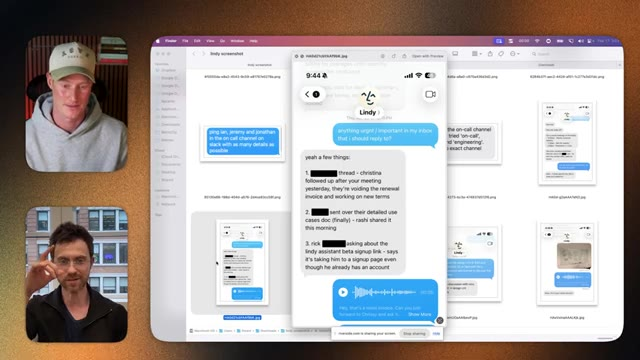
🔍 AgrandirEt c'est donc ce que je veux dire par le fait que ma relation avec mon ordinateur a changé. J'utilise beaucoup mon ordinateur, honnêtement. J'utilise beaucoup plus mon téléphone portable et j'ouvre à peine Gmail maintenant. C'est assez bizarre. J'avais l'habitude d'être collé à ma boîte de réception comme n'importe quel autre fondateur. Maintenant, tout se passe simplement sur mes messages sur mon téléphone portable. Et c'est assez bizarre. Je regarde le bureau en ce moment et je vois tous ces ordinateurs et ces grands écrans.
Interface & Outils : Application mobile Lindy, interface de démonstration.
Contenu textuel & Code : Interface de messagerie intelligente avec l'assistant Lindy gérant des tâches et des résumés.
Action / Démonstration : Démonstration de l'utilisation de l'assistant IA mobile Lindy.
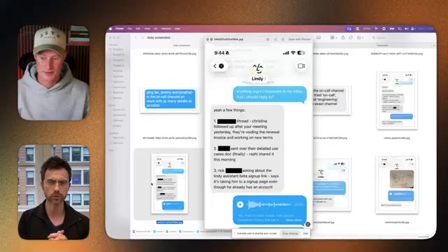
🔍 Agrandir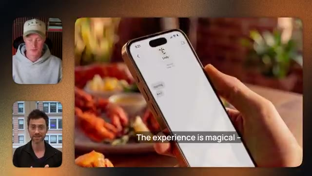
🔍 AgrandirEt de plus en plus, je perçois ces choses presque comme, c'est presque comme s'il y avait un peu de nostalgie, quelque chose de presque mélancolique à ce sujet en fait. Eh bien, je veux dire, je les perçois comme des reliques du passé. Je les perçois comme, je vois un ordinateur et un grand moniteur, et un clavier, et une souris. Je les perçois comme un outil que nous utilisons pour micro-gérer la technologie, n'est-ce pas ?
Interface & Outils : Présentation ou face-caméra explicatif du trader sans interface logicielle partagée.
Contenu textuel & Code : Explications orales des stratégies et mise en contexte méthodologique du marché.
Action / Démonstration : Explications face caméra et analyse conceptuelle des marchés.
Il vous faut un clavier et une souris parce que vous devez micro-gérer votre truc, touche par touche, clic par clic par clic, vous voyez ? Et c'est un peu comme un ouvrier d'usine. Vous êtes un travailleur du savoir, mais vous êtes presque un ouvrier d'usine et c'est une machine que vous utilisez pour produire du savoir toute la journée, n'est-ce pas ? C'est une machine très compliquée. Et je pense que lorsque votre ordinateur devient assez intelligent, c'est juste comme un employé, du genre vous n'avez plus besoin de le micro-gérer.
Interface & Outils : macOS, Finder, Aperçu d'images, application de messagerie mobile sur captures d'écran.
Contenu textuel & Code : Captures d'écran miniatures affichant des discussions avec un assistant virtuel nommé « Lindy » sur smartphone.
Action / Démonstration : Le présentateur discute de la gestion des tâches et de l'utilisation d'outils numériques tout en montrant des exemples de captures d'écran de l'interface mobile Lindy.
Et donc, plus votre ordinateur est petit, plus vous pouvez lui donner un objectif de haut niveau au lieu de le micro-gérer. Vous pouvez lui dire, hé, va dans ma boîte de réception, trouve cet e-mail, prépare un rapport sur Google Docs, convertis-le en PDF, et renvoie-le-lui. Et toute la mise en relation de toutes les applications, tout ça, l'ordinateur va le comprendre par lui-même. Je pense aussi que beaucoup de choses se résument probablement à la créativité dont vous pouvez faire preuve avec les tâches que vous voulez qu'il aille accomplir.
Interface & Outils : macOS Finder, aperçu de captures d'écran mobiles, application de messagerie de l'assistant Lindy.
Contenu textuel & Code : Interface d'un assistant virtuel (Lindy) listant des messages et des tâches de résumé de boîte de réception.
Action / Démonstration : Présentation d'un cas d'usage d'un agent IA gérant des messages et résumant des e-mails.
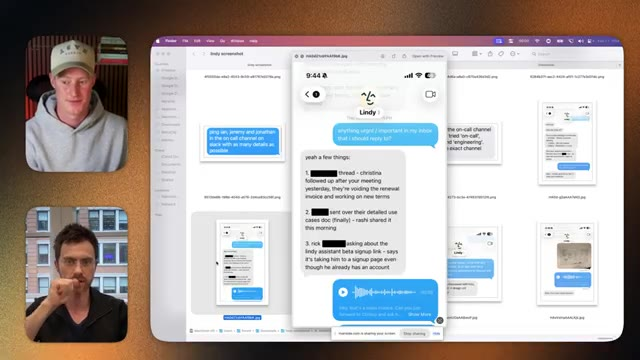
🔍 Agrandir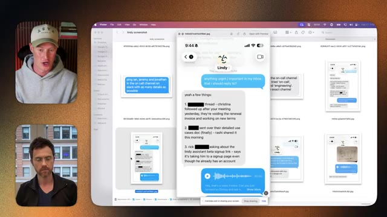
🔍 AgrandirDonc c'est quelque chose, par exemple, avec Claude Vaughn et Lindy avec qui j'ai expérimenté, du genre, OK, jusqu'où je pourrais pousser ce truc ? Tu sais, genre, bien sûr, je pourrais peut-être lui faire parcourir mes réunions et planifier une réunion et, tu sais, ce genre de trucs. Mais genre, j'ai été de plus en plus impressionné par ce qu'il peut faire. Et pour rebondir sur ce que tu dis, où on a presque l'impression que les ordinateurs sont des reliques du passé.
Interface & Outils : Application de messagerie Lindy, Finder macOS, Aperçu d'images.
Contenu textuel & Code : Interface de conversation avec l'assistant Lindy posant des questions sur les e-mails urgents, listant des points de suivi (fil de discussion, documents d'utilisation, liens d'inscription bêta).
Action / Démonstration : Présentation et démonstration de l'interface de l'assistant IA Lindy et de ses capacités d'automatisation des e-mails et messages.
C'est marrant parce qu'on est tous les deux tellement immergés dans la technologie et on est tellement à fond, genre, mec, pour ma part, j'adore les nouveaux produits Apple. J'adore un nouveau MacBook Pro. J'adore un nouveau Mac Studio, un Mac mini, peu importe. Mais genre, je suis de plus en plus fatigué de regarder mon ordinateur. Et j'aimerais, je suis tellement impatient d'arriver au moment où l'intelligence artificielle sera assez performante pour que je puisse lui envoyer un message vocal, aller faire une marche et qu'elle puisse partir faire toutes ces différentes choses pour moi.
Interface & Outils : macOS Finder et visioconférence.
Contenu textuel & Code : Fichiers d'images et extraits de texte liés au support ou à la documentation.
Action / Démonstration : Présentation et partage d'éléments visuels à l'écran.
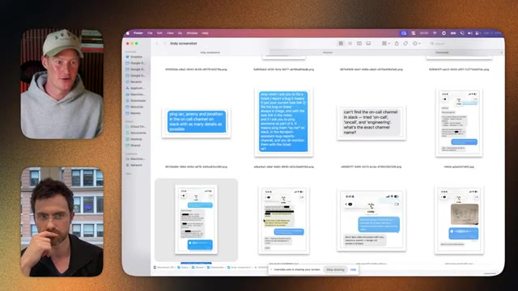
🔍 AgrandirEt, vous savez, ça fait peut-être plus de travail que je n'en ferais en peut-être environ trois ou quatre heures passées assis sur mon ordinateur et à faire mon travail de concentration profonde, si on peut même appeler ça comme ça. C'est donc pour cela que j'ai été si impressionné par en quelque sorte cette nouvelle révolution que nous commençons à voir, de simplement ces agents auxquels nous pouvons envoyer des textos ou même, vous savez, je suppose qu'à un moment donné nous pourrons peut-être avoir un appel téléphonique ou simplement discuter par message vocal et les lancer pour qu'ils fassent ces choses. C'est pourquoi j'ai vraiment adoré ce produit que vous avez créé, parce que je peux me reconnecter davantage avec la nature. Je peux me reconnecter avec mes amis au lieu d'avoir l'impression que je dois bosser dur toute la journée et faire ces choses manuellement. C'est juste que, c'est intéressant de voir comment les dynamiques sont en train de changer.
Interface & Outils : macOS Finder et application de visioconférence.
Contenu textuel & Code : Miniatures de captures d'écran montrant divers messages textuels et interfaces de discussion mobile.
Action / Démonstration : Présentation et visualisation de captures d'écran illustrant des exemples de messages ou de tâches.
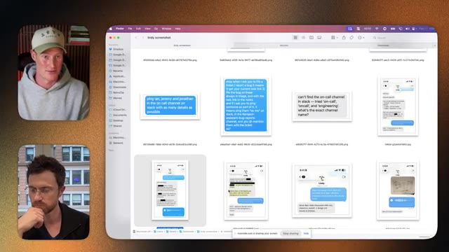
🔍 Agrandir100 %. Je veux dire, la façon dont nous avons toujours exprimé notre mission est de libérer l'humanité du travail. Une fois que l'humanité sera libérée du travail, laissant de côté pour l'instant les questions sociétales profondes que cela soulève, mais une fois que l'humanité sera libérée du travail et que nous aurons résolu ces questions profondes, vous n'allez pas avoir d'ordinateur. Vous allez simplement être au parc au soleil, à traîner avec vos amis et votre famille, et vous allez avoir votre téléphone.
Interface & Outils : Gestionnaire de fichiers / système de visionnage de captures d'écran.
Contenu textuel & Code : Miniatures de captures d'écran contenant des messages texte et des interfaces de messagerie.
Action / Démonstration : Présentation de captures d'écran illustrant des exemples de communication ou de rapports d'erreurs.
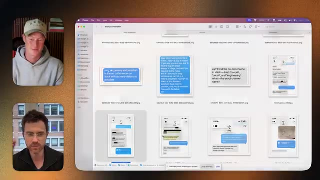
🔍 AgrandirEt peut-être qu'il y aura un Neuralink à ce moment-là, et tu pourras simplement parler à ton téléphone. Tu te dis, tu peux m'apporter un burrito ? Oh, ce serait chouette s'il y avait un bâtiment ici. Et je suis d'accord avec toi, tu te retrouves en quelque sorte limité par, c'est un sentiment vraiment surréaliste parce que, tu sais, nous avons construit cette application et nous découvrons nous-mêmes de nouveaux cas d'usage pour elle sans arrêt.
Interface & Outils : Application de visioconférence et explorateur de fichiers macOS (Finder).
Contenu textuel & Code : Miniatures d'images de messages textuels et d'échanges conversationnels affichées dans l'explorateur de fichiers.
Action / Démonstration : Discussion en visioconférence avec partage d'écran de documents visuels et de captures d'écran.
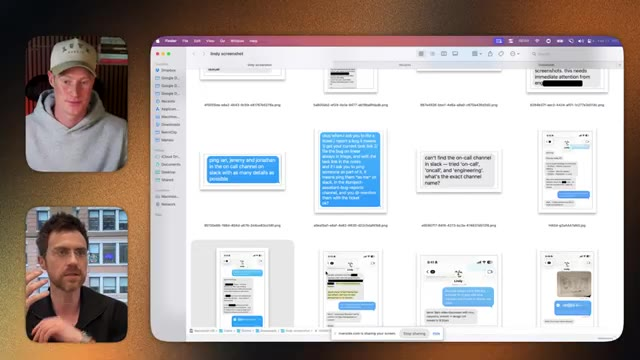
🔍 AgrandirEt une fois que vous commencez à en faire une habitude, vous commencez petit, vous commencez par des trucs évidents. Tout le monde veut de l'aide avec ses e-mails, ses réunions et son calendrier. Mais ensuite, petit à petit, vous l'utilisez de plus en plus, vous lui parlez toute la journée, et petit à petit, vous êtes à votre ordinateur et vous faites quelque chose et vous vous sentez bête. Vous vous dites, pourquoi je fais ça ? Sûrement que Lindy peut faire ça. Et donc je vais vous donner un exemple de quelque chose qui s'est passé l'autre jour.
Interface & Outils : Application de visionnage d'images sur macOS et interface de visioconférence.
Contenu textuel & Code : Dossier contenant de nombreuses miniatures de captures d'écran de messages textuels (style chat/Slack).
Action / Démonstration : Le présentateur illustre visuellement son propos en affichant des exemples de captures de conversations.
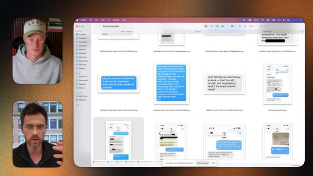
🔍 AgrandirGenre, je travaille beaucoup sur le produit et je crée beaucoup de tickets à chaque fois que je rencontre un problème avec Lindy. Et donc je parle avec Lindy, un truc mauvais s'est produit. Je me dis, ah, c'est nul. Je prends une capture d'écran sur mon téléphone. Je l'envoie sur mon ordinateur. J'ouvre Minier. C'est ce qu'on utilise pour notre suivi des bugs. Je crée un ticket. Je définis une priorité.
Interface & Outils : macOS Finder, application de messagerie ou de gestion de tâches.
Contenu textuel & Code : Instructions textuelles données à une intelligence artificielle (Lindy) concernant la création de tickets de bugs sur Linear, l'envoi de messages sur Slack et la gestion des notifications.
Action / Démonstration : Présentation d'un flux de travail automatisé et de consignes textuelles pour signaler des bugs à l'assistant IA.
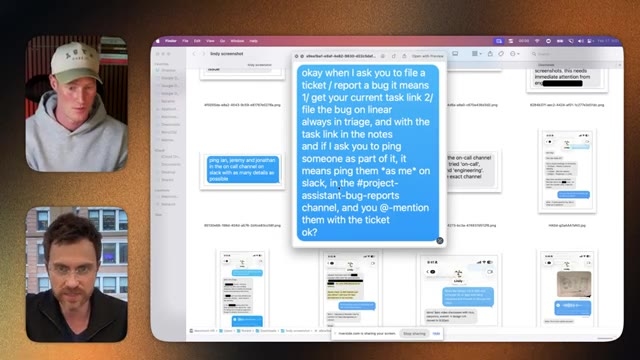
🔍 AgrandirJe l'envoie à quelqu'un. Je joins le truc. Et je me dis, attends une minute, pourquoi je fais ça ? Et donc j'ai juste envoyé ce message à Lindy et je me suis dit, hé, quand je te demande de créer un ticket ou de signaler un bug, je veux que tu ailles simplement là-dedans et que tu le crées. Et puis si je te demande, tu sais, de contacter quelqu'un sur Slack à ce sujet également. C'est donc ça que je veux dire par micro-gérer l'ordinateur.
Interface & Outils : Application de messagerie / système de gestion de tickets.
Contenu textuel & Code : Instructions détaillées sur la façon de signaler des bugs, d'obtenir des liens de tâches et d'interagir sur Slack.
Action / Démonstration : Le présentateur explique et montre un message de consignes envoyé à l'assistant IA Lindy.
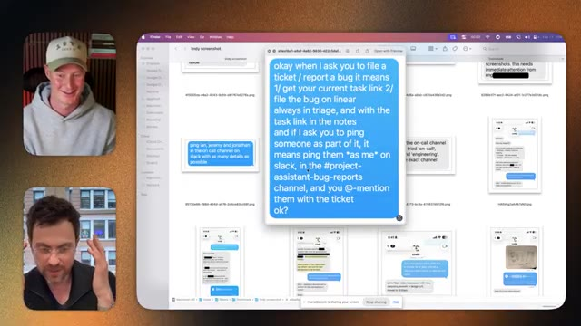
🔍 AgrandirVous savez, comme ici ce flux de travail est en quelque sorte partagé entre Linear et Slack. Et donc je pense qu'il n'a presque aucun flux de travail qui est contenu dans une seule application. Il s'étend toujours sur plusieurs applications. Vous savez, vous rassemblez une présentation et ensuite vous l'exportez et vous l'envoyez par e-mail. Et vous savez, aujourd'hui, le flux de travail doit être orchestré à travers toutes ces applications.
Interface & Outils : Lindy.ai, gestionnaire de fichiers macOS, interface de messagerie.
Contenu textuel & Code : Instructions textuelles sur la gestion des tickets et des rapports de bugs connectant Linear et Slack.
Action / Démonstration : Présentation d'un flux de travail automatisé multi-applications entre Linear, Slack et des agents IA.
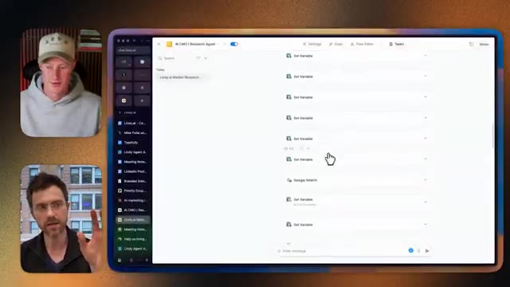
🔍 AgrandirEt le gars qui doit faire l'orchestration, c'est l'utilisateur. Et personne ne s'est dit étant enfant, quand je serai grand, je veux être orchestrateur de flux de travail. Et c'est donc ce que je veux dire à propos de la relation avec les ordinateurs qui est en train de changer, où vous pouvez simplement donner un objectif à votre ordinateur et il va orchestrer le flux de travail pour vous. Oui, je pense que je suis d'accord à 100 %. Je pense que c'est tout simplement une excellente façon, une nouvelle direction vers laquelle nous avançons.
Interface & Outils : Navigateur web / application de messagerie ou de configuration de workflow (type Lindy AI / interface de chat textuel).
Contenu textuel & Code : Texte affiché dans une bulle de dialogue bleue donnant des instructions détaillées sur la gestion des tickets et des rapports de bugs ("okay when I ask you to file a ticket / report a bug...").
Action / Démonstration : Présentation ou démonstration d'un prompt textuel ou d'instructions d'automatisation de tâches.
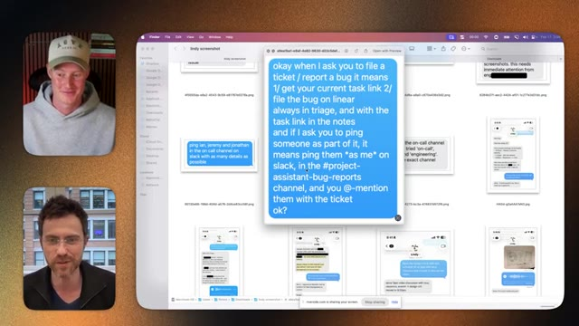
🔍 AgrandirEt ensuite, je suppose que, genre, une question que j'ai, c'est : comment est-ce que Lindy apprend, genre, la façon dont tu operes, par exemple ? Parce que j'ai remarqué que, lorsque j'étais à l'intérieur de mon assistant Lindy, il y avait cette, genre, je crois que c'était une partie d'instructions, où j'ai remarqué que c'était comme mon agent de messagerie. Et il a effectivement lu mes e-mails, a compris mon langage et la façon dont je réponds réellement à des e-mails spécifiques.
Interface & Outils : Interface utilisateur web affichant un historique de versions (Version History).
Contenu textuel & Code : Liste des versions numérotées (Version 8, Version 7, etc.) avec des horodatages datant de septembre 2025.
Action / Démonstration : Navigation et affichage de l'historique des versions d'un document ou d'un assistant IA.
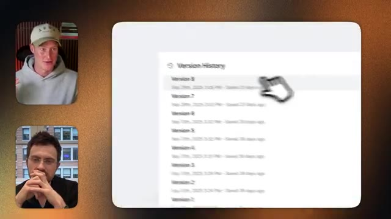
🔍 AgrandirDonc j'aimerais bien savoir, parce qu'évidemment ces assistants IA sont en quelque sorte limités par la qualité de la réponse qu'ils fournissent, tu sais, mais s'ils ne comprennent pas comment je réponds réellement, alors à quoi bon le laisser partir et le faire à ma place ? Personne n'aime la bouillie générée par l'IA. Mais je veux connaître votre processus pour cela. Comment Lindy apprend-elle réellement notre façon de parler, notre façon de fonctionner, et notre façon d'exécuter réellement différentes choses ?
Interface & Outils : Navigateur web / Finder / Interface de messagerie ou de gestion de tâches.
Contenu textuel & Code : Texte de prompt détaillé pour un assistant IA expliquant comment créer des tickets de bug, notifier des personnes sur Slack et gérer les tâches.
Action / Démonstration : Présentation et explication d'un exemple concret de configuration et de consignes données à un assistant IA pour automatiser des tâches.
Oui. Cela a vraiment été un parcours en interne où nous avons passé beaucoup de temps à développer ce système pour que Lindy s'améliore continuellement et apprenne vos préférences. Et ça devient magique une fois que ça fonctionne vraiment. Il y a cet exemple où Lindy m'a envoyé cet e-mail. Elle se disait, hé, ton avocat vient d'envoyer une contre-offre à ces gars.
Interface & Outils : macOS Finder et application de messagerie / assistant virtuel Lindy
Contenu textuel & Code : Texte de consigne détaillé adressé à l'assistant ("okay when I ask you to file a ticket...") et interface de discussion mobile/desktop avec Lindy.
Action / Démonstration : Présentation de cas d'usage et d'interactions textuelles avec l'assistant IA Lindy pour illustrer son apprentissage des préférences utilisateur.
Et d'ailleurs, j'ai remarqué dans la contre-offre qu'il a utilisé cette adresse pour ton bureau. C'est la bonne adresse ? Je pensais que c'était l'adresse de ton bureau. Et je fais genre, oh ouais non, t'as raison, genre il s'est trompé d'adresse, genre s'il te plaît, envoie-lui un e-mail, c'est fou, c'est vraiment génial et je mens pas quand je dis que genre tous les jours, y compris genre il y a quelques heures, j'étais en réunion avec un vieux pote et Lindy m'envoie toujours un message quand je rencontre quelqu'un avec genre une préparation pour la réunion et l'ordre du jour, la personne que je rencontre et euh elle m'envoie ce SMS et elle fait genre, oh tu rencontres Shukant aujourd'hui, c'est un vieux pote, vous avez bossé ensemble pendant cinq ans, c'était un peu un pionnier de l'équipe il y a un moment et je fais genre, putain, comment
Interface & Outils : Application de messagerie/assistant Lindy, explorateur de fichiers macOS en arrière-plan et flux vidéo des participants.
Contenu textuel & Code : Messages texte surlignés en jaune mentionnant '1841 Market St' et '101 New Montgomery', illustrant une discussion sur une erreur d'adresse dans un document de contre-offre.
Action / Démonstration : Le présentateur présente une capture d'écran d'un échange avec un assistant IA pour illustrer la vérification automatisée de documents et de détails contractuels.
tu sais quoi ? Comment c'est arrivé ? Et donc ce qui s'est passé, c'est que nous avons construit ce système. C'est comme un système de mémoire à apprentissage continu. Nous avons itéré dessus pendant longtemps. Nous l'avons vraiment fait briller comme un beau joyau. Et nous nous sommes dit, oh mon Dieu, ça marche. C'est génial. Petit à petit, il en apprend sur moi et il me surprend par tout ce qu'il sait sur moi. Le seul inconvénient, c'est qu'on ne récolte vraiment ces bénéfices qu'après avoir parlé un moment de soi, n'est-ce pas ? C'est une relation qu'on construit sur le long terme. Et donc je me souviens distinctement, nous étions au bureau tard le soir quand nous discutions de ça, en train de dîner avec l'équipe, et nous nous sommes dit, ne serait-ce pas chouette si l'on pouvait simplement tout savoir sur toi dès le départ.
Interface & Outils : Interface de chat Lindy, application de messagerie mobile et interface de gestion de tâches.
Contenu textuel & Code : Conversations textuelles, messages de notification et transcriptions d'appels vocaux de l'assistant IA Lindy.
Action / Démonstration : Démonstration de l'utilisation d'un système d'assistant conversationnel intelligent et de sa mémoire contextuelle.
Comment pourrions-nous obtenir toutes ces données vous concernant, toutes ces préférences ? Et donc ce que nous avons fini par faire, c'est que nous avons construit, nous l'avons appelé le système hydrator. Il hydrate donc votre base de connaissances et votre base de mémoire. Et donc ce que nous faisons, c'est que lorsque vous vous inscrivez, nous demandons l'accès à votre boîte de réception. Nous sommes, encore une fois, conformes à la norme SOC 2, conformes à la norme HIPAA, super sécurisés.
Interface & Outils : macOS Finder, application de messagerie ou assistant virtuel (Lindy), interface de visioconférence (type Zoom ou Google Meet).
Contenu textuel & Code : Messages texte d'une conversation confirmant des adresses (ex: 1841 Market St vs 101 New Montgomery) et des mises à jour sur une contre-offre immobilière ou commerciale.
Action / Démonstration : Le présentateur explique et illustre visuellement la collecte de données, de préférences et d'informations contextuelles à l'aide d'un assistant conversationnel et de captures d'écran.
Et si vous nous donnez accès à votre boîte de réception avec votre permission, nous examinons votre historique d'e-mails. Nous examinons des milliers et des milliers d'e-mails et nous les traitons à l'aide de grands modèles de langage. Encore une fois, rien n'est jamais utilisé pour l'entraînement. Nous avons des accords en place avec les laboratoires et ainsi de suite. Mais nous traitons tout cela et nous l'utilisons pour apprendre à vous connaître. Et ensuite, c'est vrai, vous pouvez aller dans vos paramètres et vous pouvez voir tout ce que nous avons appris.
Interface & Outils : Interface de chat mobile (Lindy) et système de gestion de fichiers sur macOS.
Contenu textuel & Code : Échanges textuels entre l'assistant IA et l'utilisateur concernant la vérification d'adresses postales et de contre-offres.
Action / Démonstration : Démonstration de l'utilisation d'un agent IA pour vérifier des informations et répondre automatiquement à des e-mails ou des messages.
Et très souvent, les gens trouvent en fait que c'est un réel plaisir d'apprendre, d'aimer lire ce rapport. Et nous l'utilisons ensuite pour faire beaucoup de choses, y compris la rédaction de réponses pour vous, parce que nous avons appris à qui vous répondez et comment vous écrivez. Et je ne mens pas en disant qu'à ce stade, c'est quotidien. Vous savez, je regarde ma boîte de réception et je regarde un brouillon qui s'y trouve, en réponse à un e-mail que j'ai reçu.
Interface & Outils : Application de messagerie / Assistant virtuel Lindy sur macOS
Contenu textuel & Code : Interface de chat montrant des bulles de discussion avec des mises à jour textuelles, des vérifications d'adresses et des confirmations automatiques ("Got it - replying to Brandon now... Done!").
Action / Démonstration : Démonstration de l'automatisation des réponses textuelles et de la gestion de messages par l'assistant IA.
Et au début, je pensais que je devenais fou. Au début, je me suis dit, est-ce que c'est moi qui ai écrit ce brouillon ? Je n'aucun souvenir de l'avoir écrit. Et c'est juste que, c'est Lindy qui l'a écrit. Donc oui, nous avons prêté beaucoup d'attention à ça. Genre, pas seulement le fait que ce soit proactif, mais le fait que ce soit personnalisé et que ça continue d'apprendre à ton sujet et de s'améliorer. Oui, c'est énorme. Et comme tu l'as dit, le fait que tu n'aies pas, tu sais, bien sûr, ça peut apprendre plus et plus tu chattes avec.
Interface & Outils : Application de messagerie mobile et système de visioconférence (type Riverside ou Zoom).
Contenu textuel & Code : Interface de discussion textuelle montrant des interactions automatisées avec un assistant IA ("Lindy") gérant des notifications et des adresses.
Action / Démonstration : Présentation et discussion autour d'un échange automatisé par IA illustrant une discussion textuelle entre l'utilisateur et Lindy.
Mais le fait qu'il ait déjà cette information juste parce qu'il est capable de l'extraire. Genre pour moi, je n'aurais probablement pas permis qu'il rédige des réponses à mes e-mails s'il n'avait pas déjà cette connaissance préexistante. Mais maintenant, il est tellement bon. Je me dis, ok, c'est assez bien pour être réellement utilisé. Donc ça a été quelque chose d'incroyable pour moi quand je l'ai utilisé. Est-ce qu'il y a autre chose dont tu aimerais qu'on discute ou une façon dont on pourrait en quelque sorte conclure ?
Interface & Outils : Interface macOS avec un gestionnaire de fichiers en arrière-plan et une fenêtre de discussion mobile (Lindy) au premier plan, accompagnée d'une vue de visioconférence.
Contenu textuel & Code : Captures d'écran de messages textuels et de notifications de l'assistant IA Lindy concernant des adresses ("1841 Market St" vs "101 New Montgomery") et des confirmations de réponses automatisées.
Action / Démonstration : Illustration visuelle des capacités d'un agent IA (Lindy) capable d'extraire des informations, de poser des questions de vérification et de rédiger/envoyer des messages ou e-mails de confirmation.
C'est disponible dès aujourd'hui. Oui, tout à fait. Et non, nous recrutons. Si quelqu'un écoute et qu'il est ingénieur et passionné par ce genre de choses, nous développons notre équipe rapidement. Parfait. Et ensuite, en ce qui concerne les prix, à quoi ressemble la tarification en ce moment ? Oui, ça coûte 49 dollars par mois.
Interface & Outils : Visioconférence (aucun graphique, terminal ou code affiché).
Contenu textuel & Code : Aucun contenu technique, indicateur, code ou données chiffrées visibles.
Action / Démonstration : Conversation en visioconférence sans manipulation visuelle ou technique.
Compris. Non, j'allais dire, jusqu'où ça vous mène ? Parce que je l'ai utilisé, ça m'a mené très loin. Je n'ai atteint aucune limite. Donc je suppose que pour la majorité des gens, c'est probablement suffisant, à moins que vous n'ayez une utilisation vraiment excessive de ceci. C'est exactement ça, c'est suffisant pour 98 % des gens, il y a environ deux pour cent des gens qui rencontrent des limites et on leur dit simplement de nous contacter et et généralement ce qu'on fait c'est que ça devient du genre cent dollars par mois parfois deux cents dollars par mois pour les utilisateurs vraiment très intensifs certaines personnes nous utilisent pour coder ce qu'on n'avait jamais vraiment prévu mais c'est du genre hey on ne peut pas vraiment vous donner des jetons à l'infini pour cinquante dollars par mois et donc ouais c'est suffisant pour 98 % des gens. Compris, ouais, à 100 %.
Interface & Outils : Visioconférence (aucun graphique, terminal ou interface de trading visible).
Contenu textuel & Code : Aucun contenu technique, code ou indicateur affiché à l'écran.
Action / Démonstration : Conversation en visioconférence sans démonstration technique ni manipulation de logiciel.
Eh bien, Flow, merci beaucoup d'être venu, mec. C'est, encore une fois, comme je l'ai dit, la boucle est bouclée, j'utilise votre produit depuis des années maintenant. Je suis super ravi de discuter de ça, et j'ai hâte de voir ce que vous allez continuer à construire, et j'espère pouvoir vous réinviter quand vous sortirez un autre produit révolutionnaire. Ce serait un plaisir, ouais. Merci beaucoup de m'avoir reçu, Brock. Santé.
Interface & Outils : Visioconférence (aucun outil de trading, graphique ou code affiché).
Contenu textuel & Code : Aucun indicateur technique, code source ou données chiffrées.
Action / Démonstration : Conversation de fin d'entretien entre le présentateur et son invité.